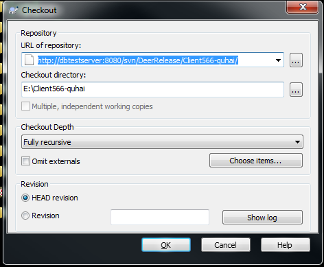
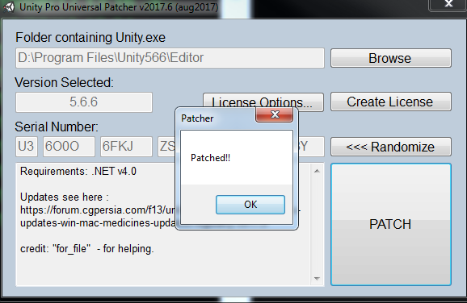

从svn服务器拉取到本地
更新本地文件
提交本地修改，commit之前必须要先update，然后用BeyondCompare工具比较差异，确认无误之后，再commit
项羽传
http://dbtestserver:8080/svn/DeerDev/Bin/Cluster
http://dbtestserver:8080/svn/DeerRelease/Client566-quhai/
雪鹰
http://dbtestserver:8080/svn/DeerDevLYFX/Bin/Cluster
http://DBTestServer:8080/svn/DeerDevLYFX/Client2017
Unity5.6.6
安装文件在公司的共享目录 \ubuntu\share\software\unityCrack\5.6.6\Unity2017
安装文件在公司的共享目录 \ubuntu\share\software\unityCrack\2017\安装流程，以Unity2017为例
无需安装MonoDeveloper，我们用Visual Studio开发
安装完成后，不要直接运行Unity，完成后面两步之后再运行

加载并切换到android平台，路径需要修改成你自己的
"D:\Program Files\Unity566\Editor\Unity.exe" -projectPath e:\Client566-quhai -buildTarget Android
客户端的C#开发，以及服务器的C++开发，都是用的Visual Studio
安装文件在公司的共享目录 \ubuntu\share\software\VS2017\
目前推荐使用VS2017版本，VS2019版本不支持调试Unity2017
安装文件在公司的共享目录 \ubuntu\share\software\AndroidStudio\
Unity客户端接入sdk时，用Android Studio